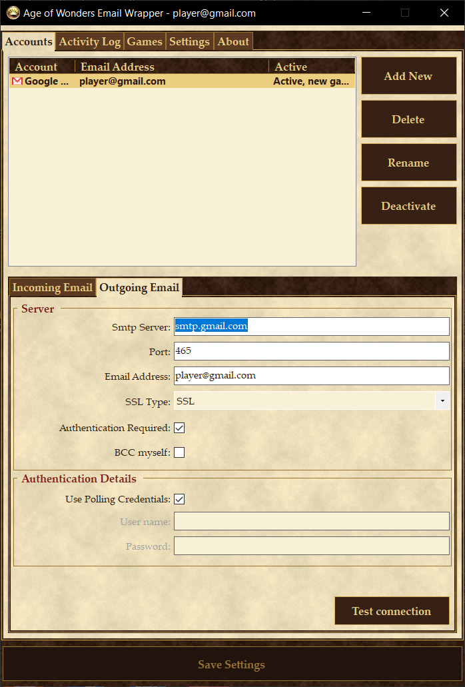
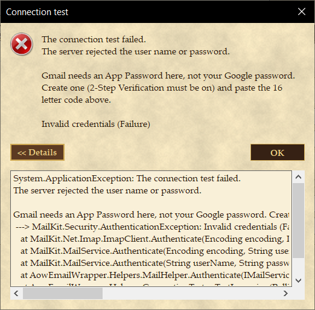
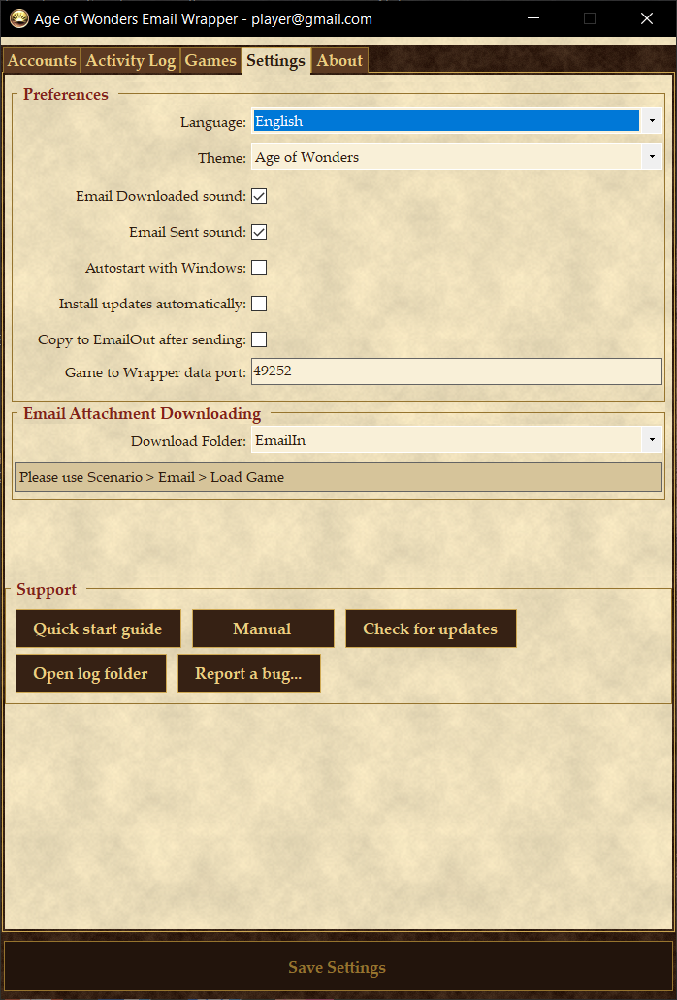

Age of Wonders Email Wrapper
Introduction
Age of Wonders, Age of Wonders II, Shadow Magic and MP Evolution can all be played by email: each player takes a turn and emails the saved game to the next player. The Wrapper automates that. It sits in the system tray, sends the turn the moment the game finishes it, watches your mailbox for incoming turns, drops them where the game expects them and reminds you when it is your move.
The games talk to the Wrapper through a tiny mail server the Wrapper runs on your own PC (127.0.0.1, port 49252). The Wrapper then relays each turn through your real email account, so your opponents receive an ordinary email with the save game attached, whether or not they use the Wrapper themselves.
Version 2.0 is a port of the 2013 program to current .NET. Its purpose is to work with today's email providers: it uses modern encryption, understands Gmail App Passwords and Microsoft's browser sign-in, checks even very full mailboxes quickly, and stores your passwords encrypted with Windows.
Installing and uninstalling
Requirements: 64-bit Windows 10 or 11 and the .NET 8 Desktop Runtime. The setup program checks for the runtime and, if it is missing, downloads the official installer from Microsoft (about 55 MB) and installs it before continuing.
The setup installs for the current Windows user only and needs no administrator password. It creates Start Menu shortcuts for the Wrapper, this manual, the Quick Start Guide and an uninstaller, and lists the Wrapper under Apps and Features. Installing a newer version over an older one upgrades it in place.
Uninstalling removes the program, its autostart entry and the email settings it wrote into the games, and asks whether to also delete your Wrapper settings folder (%APPDATA%\AowEmailWrapper). Keep it if you plan to reinstall.
Updating. Every time it starts, the Wrapper asks GitHub whether a newer build exists. By default it installs one straight away: a balloon says which build is going in, the Wrapper closes, the setup runs quietly for a few seconds and the Wrapper starts again. No administrator password is asked for and your accounts and settings are kept. If you would rather decide yourself, turn off Install updates automatically on the Settings tab; the Wrapper then mentions a new build once and Check for updates under Support on the same tab installs it whenever you are ready. If you start the Wrapper with Windows, an update may run during sign-in.
The tray icon
The Wrapper lives in the notification area by the clock. If Windows hides the icon, click the small arrow there, or drag the icon onto the taskbar so it is always visible. Closing the main window only hides it; use Exit on the tray menu to stop the Wrapper.
| Icon | Meaning |
|---|---|
| Idle. Everything is up to date. | |
| Checking your mailbox. | |
| Sending a turn. | |
| A turn has arrived and is waiting for you. | |
| A turn arrived that the Wrapper could not match to a game. Look in the game's EmailIn folder. |
Double-click the icon to open the main window (or, if a turn is waiting, to start the game). Right-click it for the menu:
- Show opens the main window.
- One entry per installed game starts that game. A small envelope next to a game means it has a turn waiting.
- Accounts switches between your email accounts.
- Poll now checks your mailbox immediately instead of waiting for the next scheduled check.
- Exit stops the Wrapper. Turns cannot be sent or received while it is not running.
Accounts tab

The list at the top holds your email accounts. An account that has Check for email ticked is active: the Wrapper watches its inbox, and any turn that arrives there is answered through that same account, so your opponents always see replies from the address they wrote to. Several accounts can be active at once.
The first active account in the list is also the primary one, shown as "Active, new games": the games are pointed at its address, and a game you start yourself is sent from it. Use Move up on the list's right-click menu to make a different account primary. Most people have one account and never think about this.
- Add New opens the account wizard.
- Activate / Deactivate switches the selected account on or off; it is the same as ticking Check for email on the Incoming Email tab. Inactive accounts stay in the list, shown in grey, but are not watched or used.
- Delete and Rename act on the selected account; Move up and Move down are on the right-click menu.
- Selecting an account shows its settings in the two tabs below, so any account can be edited. Click Save Settings when done.
- The tray menu's Accounts submenu shows a tick next to each active account; clicking one switches it on or off.
The lower half shows the selected account's settings on two tabs.
Incoming Email
| Setting | Meaning |
|---|---|
| Check for email every | Ticked, this account is active: its inbox is watched and turns received on it are answered through it. The interval is how often the mailbox is checked in full; with IMAP new mail is announced by the server straight away, so that is only a safety net. Unticked, the account is kept but not used. |
| Email Type | IMAP or POP3. Use IMAP whenever your provider offers it; see how email checking works. |
| Server, Port, SSL Type | The incoming mail server. SSL means an encrypted connection from the start (ports 993 and 995); TLS means the connection is upgraded after connecting (ports 143 and 110); None lets the Wrapper choose. |
| User name, Password | Your sign-in. For most providers the user name is the full email address. For Gmail, Yahoo and AOL the password is an app password. Accounts that sign in through Microsoft show a link to sign in again instead of a password box. |
Outgoing Email

| Setting | Meaning |
|---|---|
| Smtp Server, Port, SSL Type | The outgoing mail server. SSL is port 465, TLS is usually port 587. |
| Email Address | The address your turns are sent from. The games are told to use this address too. |
| Authentication Required | Nearly always ticked. With Use Polling Credentials ticked the same user name and password as the Incoming tab are used, which is right for every common provider. |
| BCC myself | Sends a copy of every turn to your own address. Only useful with providers that do not keep a Sent folder for mail sent by programs (Yahoo used to be one). If you turn it on, add a filter in your mailbox that moves those copies out of the Inbox so the Wrapper does not have to look at them. |
Test connection
Each tab has a Test connection button. It connects to the server with the settings shown, signs in, and reports the result. A failure shows the server's exact reply and, for the big providers, what to do about it. Use it whenever you change a setting or a password.

Save Settings at the bottom of the window lights up when something has changed. Saving restarts the mailbox checking with the new settings.
Adding an account
Click Add New on the Accounts tab. The wizard needs your address and a password, then finds the server settings by itself.

Page 2 searches the Thunderbird settings database that Mozilla maintains for its own email program. Well known providers are always found. If yours is not, the page offers three more attempts:
- Look up the mail provider for this domain finds out which company actually handles mail for your address and searches for that company instead. Try this first.
- Try common server names tries names such as mail.yourdomain.com and keeps the ones that answer.
- Enter the settings myself creates the account with placeholder settings for you to fill in on the Accounts tab. Your provider's help pages or a web search for its "IMAP settings" will have them; the ports in Troubleshooting are the usual ones.
Page 3 asks which of the found servers to use. Recommended settings picks the most secure ones and prefers IMAP over POP3; Prefer lets you insist on one or the other. Let me pick from the servers found shows every server that was found so you can choose.
Click Next on page 3 and the account is created and activated. Use Test connection to confirm it before playing.
Email providers
Gmail
Google does not accept your account password from mail programs. You need an App Password:
- Turn on 2-Step Verification for your Google account (Google Account > Security).
- Open myaccount.google.com/apppasswords, give the app any name and click Create. The wizard links to this page.
- Use the 16 letter code Google shows as the password in the Wrapper. Spaces do not matter.
Gmail's servers are imap.gmail.com (993, SSL) and smtp.gmail.com (465 SSL or 587 TLS). IMAP access is on for all Gmail accounts.
Outlook.com, Hotmail, Live and Microsoft 365
Microsoft has switched off password sign-in for mail programs entirely. These accounts use Sign in with Microsoft: the wizard replaces the password box with a button, your web browser opens on Microsoft's sign-in page, and after you accept the Wrapper receives a sign-in token instead of a password. The token is renewed automatically. If Microsoft ever revokes it (for instance after you change your password) the Wrapper pauses checking and tells you to sign in again from the Accounts tab, where the Incoming Email tab shows a Sign in with Microsoft again link.

Yahoo and AOL
Both need an app password generated on the account's Security page; the wizard links to it. The rest works like Gmail.
Everyone else
Most providers work with the settings the wizard finds and your normal password. Some smaller providers require you to switch on IMAP or "external access" in their web mail settings first.
Activity Log tab

Every turn the Wrapper sends or receives is recorded here, one line per game. Copy is the label of the copy of the game the turn lives in, when you have more than one (see the Games tab). Age is the number of days since the last turn. A line turns amber after 14 days and pink after 28, which is your cue to nudge the other players.
- Received (yellow): a turn is waiting for you. Double-click the line to start the game shown by the icon.
- Sent: you sent the last turn and are waiting for the others.
- Ended: you marked the game as over.
Right-click a line for:
- Mark as Ended. The Wrapper cannot tell from the save file when a game is over, so you do this yourself. It offers to move the game's files into an Ended folder, which the games can still load from.
- Mark as Sent, for when you sent a turn some other way.
- Resend sends the last turn you sent for that game again, in case an opponent lost the email. You can change the recipient address, but that does not change the address stored inside the save game; fix that in the game's send dialogue on your next turn. Resend is only offered while the game's status is Sent, so you cannot accidentally send an old turn after a newer one arrived.
- Delete removes the line and the game's files from the EmailIn, EmailOut and Save folders. Handy for test games.
- Move to appears when you have several copies of that game and moves the game's files into the copy you pick, for a turn that landed in the wrong one. Later turns of that game follow it.
Games tab
Every copy of Age of Wonders, Age of Wonders II, Shadow Magic and MP Evolution the Wrapper could find is listed here, with the folder it lives in and how it was found: the games' own registry entries, Steam (every library, including copies placed beside or inside the Steam copy), GOG, Apps and Features, or a scan of your fixed drives a few folders deep, which follows anything named like the game much deeper. The full drive scan runs in the background the first time the Wrapper starts and whenever you click Rescan; it can take a minute on large drives, and the list fills in when it is done. A normal start only re-checks the copies it already knows. Nothing on this tab does anything until you click Save Settings.
- Add folder... registers a copy the scan missed, for example one on another drive. Pick the folder that contains
AoW.exe,AoW2.exeorAoWSM.exe. - Set label... gives the selected copy a short name such as Vanilla, AoWx or Ziggurat, chosen from the list or typed under Other. Double-clicking a line does the same. A label can belong to only one copy of a game, so an incoming turn always has exactly one place to go.
- Set as default marks the copy that receives turns the Wrapper cannot place (see below) and that the tray menu lists first.
- Remove forgets a folder you added by hand. Detected copies cannot be removed; they simply come back on the next scan.
- Rescan runs the full drive scan again, keeping your labels. Use it after installing or copying a game.
Playing several mods at once
Mods such as AoWx or Ziggurat are installed into separate copies of the game folder. A save file looks the same whichever mod made it, so the Wrapper cannot tell them apart by content. Instead, the copy's label travels with every turn you send, in a hidden header of the email, and the Wrapper on the other side puts the turn into its copy with the same label. Labels are matched ignoring case, spaces and punctuation, so "Zig Mod" and "zigmod" agree, but everyone in a game does have to use the same word. Agree on it when you set the game up.
When the Wrapper sends a turn it decides which copy it came from by looking at which copy of the game is running, then at which copy already holds that game's earlier turns. When a turn arrives it uses, in order: the label in the email, the copy the game was last seen in, the only copy that already holds the game, and finally the default copy. A turn from an opponent who does not use the Wrapper carries no label and goes through the same fallbacks. If a first turn lands in the wrong copy, right-click it on the Activity Log and use Move to; the Wrapper remembers the choice for the rest of that game.
All copies of one game share the same email settings in the registry, so each copy hands its turns to the Wrapper without any extra setup. The tray menu shows one entry per copy, with the label in brackets.
Settings tab

| Setting | Meaning |
|---|---|
| Language | The Wrapper's interface language. Takes effect after saving and restarting. |
| Email Downloaded sound, Email Sent sound | Play a sound when a turn arrives or has been sent. |
| Autostart with Windows | Start the Wrapper when you sign in to Windows. Recommended if you play regularly, otherwise turns only arrive while it runs. |
| Install updates automatically | On (the default): a newer build found at start-up is installed right away and the Wrapper comes back by itself. Off: you are told once, with a balloon, and can install it whenever you like from Check for updates under Support on this tab. |
| Copy to EmailOut after sending | Also keep a copy of every sent turn in the game's EmailOut folder. |
| Game to Wrapper data port | The local port the games hand their turns to. Only change it if another program already uses 49252. |
| Download Folder | Where incoming turns are put. EmailIn means you load them with Scenario > Email > Load Game. Save puts them with your ordinary saved games so Load Game on the main menu finds them, which saves a few clicks. |
Under Support are buttons that open the Quick Start Guide and this manual, check for updates, open the log folder and send a bug report.
Playing a game
Sending
Start a play-by-email game in any of the games as you always would; the Wrapper has already pointed the game at itself, so no email settings are needed inside the game. When you end your turn and the game sends the email, its progress bar reaches 100% almost at once: the game has handed the turn to the Wrapper. The Wrapper then sends it through your account in the background, plays the sent sound and shows a balloon naming the recipient. The Activity Log shows the game as Sent.
If the send fails, a dialog explains why and offers to try again. Turns that could not be sent stay in the Activity Log as Outbox and are retried the next time the mailbox check succeeds.
Receiving
With IMAP the Wrapper keeps a connection open and the mail server tells it the moment a message arrives, so a turn normally shows up within seconds of being sent. The interval on the Incoming Email tab is a safety net check on top of that, and it is the only mechanism for POP3 or for the rare IMAP server without the IDLE feature. Poll now on the tray menu forces a check at any time. When it finds an email with a save game attached it downloads the attachment into the game's folder, marks the email as read, plays the downloaded sound and switches the tray icon to the envelope. Double-click the icon, or the game's line on the Activity Log, to start the game and load the turn.
Create a test game
A game against yourself proves that sending and receiving both work.
- Start the game, choose Scenario, then Email (or Play by email), then New Game.
- Pick a two player map and make both players Human.
- Enter your own email address for both players and give the game a distinctive name.
- Play a turn and let the game send it. You will hear the sent sound and the Activity Log shows the game as Sent.
- Right-click the tray icon and choose Poll now. Within a few seconds the icon changes to the envelope and the Activity Log shows Received.
- Start the game again and load the turn with Scenario > Email > Load Game (or Load Game, if Download Folder is set to Save). You are now the second player.
- Repeat until convinced. Then right-click the game in the Activity Log and choose Delete.
For a real game the only difference is entering your opponents' addresses in step 3.
How email checking works
IMAP
The Wrapper asks the server for the unread messages in the Inbox and only considers those from the last year. It asks the server for the structure of those messages rather than downloading them, so it can tell in one request which ones carry a save game, even in a mailbox with tens of thousands of unread messages. Only messages with a save game attached are downloaded; those are then marked as read. Messages without one are recorded in a small local file so they are never examined again.
To download a turn a second time, mark its email as unread in your mail program and choose Poll now. Turns older than a year are never fetched.
POP3
POP3 has no concept of read and unread, so the Wrapper keeps its own record of every message it has seen and checks only new ones. Game emails are left on the server so your usual mail program still sees them. To download a turn again, click Show POP3 emails at the bottom of the main window, tick the email and choose Re-Download.
The first check
The first time the Wrapper checks a mailbox it looks at the unread mail from the last year, so a turn that is already waiting is picked up straight away. Older unread mail is recorded as seen and ignored.
Where your passwords go
Passwords are stored in %APPDATA%\AowEmailWrapper\Config\config.xml, encrypted with the Windows Data Protection API and tied to your Windows user account. Nobody else on the PC, and no copy of the file taken to another PC or user account, can read them; on another machine you simply enter the passwords again. Microsoft sign-in tokens are kept the same way. Settings files from earlier versions are converted when the Wrapper first starts.
The Wrapper's own mail server only listens on 127.0.0.1, so it is not reachable from other computers.
Troubleshooting
"The server rejected the user name or password"
For Gmail, Yahoo and AOL this almost always means an ordinary password was entered instead of an app password; see Email providers. For a Microsoft account, sign in again from the Incoming Email tab. Otherwise check the user name: some providers want the full address, a few want only the part before the @. Test connection shows the server's exact wording.
A balloon says checking for email is paused
The Wrapper stops checking after the server rejects the sign-in, rather than trying again every few minutes with the same wrong password. Correct the account on the Accounts tab, click Test connection, then Save Settings; checking starts again.
Nothing is downloaded
- IMAP: the email must be in the Inbox, unread, and less than a year old. A mail rule that files game emails into another folder, or a mail program that marks them read, hides them from the Wrapper.
- POP3: a mail program on your PC may be removing the email from the server. See above.
- The attachment must be a
.asgfile. Some mail programs rename or wrap attachments; ask your opponent to send the turn from the game or the Wrapper. - Check the Spam folder. Mail from a new or rarely used address, especially with an unusual attachment, can be filed as spam and the Wrapper only watches the Inbox. Mark it as not spam and choose Poll now; after that, mail from that player usually arrives normally.
"The Wrapper does not have Write access to these folders"
A game installed under a Program Files folder, or on a drive that used to hold Windows, has permissions that let ordinary accounts read but not write, so neither the Wrapper nor the game can save turns there. The warning offers to fix this: answer Yes, allow the change when Windows asks, and the Wrapper grants your account write access to those game folders with the standard icacls tool. Nothing else on the PC is changed. If you decline, copy the game to a folder such as E:\Age of Wonders and use Rescan on the Games tab.
A game is missing from the tray menu
Open the Games tab. If the game is not listed, click Add folder... and pick the folder that holds its executable, then Save Settings. The Wrapper looks in the games' registry entries, every Steam library, GOG's registry, Apps and Features and the usual folders, but a copy on an unusual drive or inside a deeply nested folder has to be added by hand. A copy shown in grey as Missing was added by hand and its folder has since gone; remove it or add the new location.
Asking for help
The Wrapper writes what it does, and every error, to %APPDATA%\AowEmailWrapper\Logs\wrapper.log. Open log folder under Support on the Settings tab takes you there. Report a bug next to it sends a description you type, with that log attached, to the maintainer from your own email account; if no account is set up yet it opens the report in your email program instead.
Antivirus and security software
Some security programs treat an unfamiliar program that makes mail connections as suspicious and block it, or shut it down. If tests fail with connection errors while the same settings work in a mail program, add the Wrapper to your security software's list of allowed programs, or temporarily disable its mail scanning to confirm it is the cause.
Typing settings yourself
The usual combinations, if you chose Enter the settings myself:
| Incoming | SSL Type | Port |
|---|---|---|
| IMAP | SSL | 993 |
| IMAP | TLS or None | 143 |
| POP3 | SSL | 995 |
| POP3 | TLS or None | 110 |
| Outgoing | Port |
|---|---|
| SSL | 465 |
| TLS | 587 |
| None | 25 or 587 |
Starting the Wrapper from a shortcut or script
AowEmailWrapper.exe /autostart starts it without the splash screen after a short delay, which is what the Autostart with Windows option uses.
The Wrapper was written by David Honess; version 2.0 is by Eugene Wolff. It is maintained by the Age of Wonders play-by-email community. It is open source under the MIT licence. Mail transport by MailKit (Jeffrey Stedfast); account settings from the Mozilla Thunderbird autoconfig database.